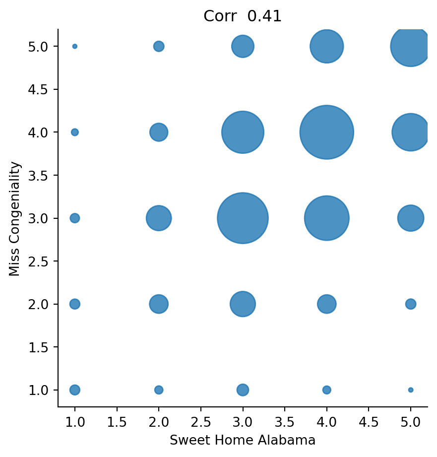
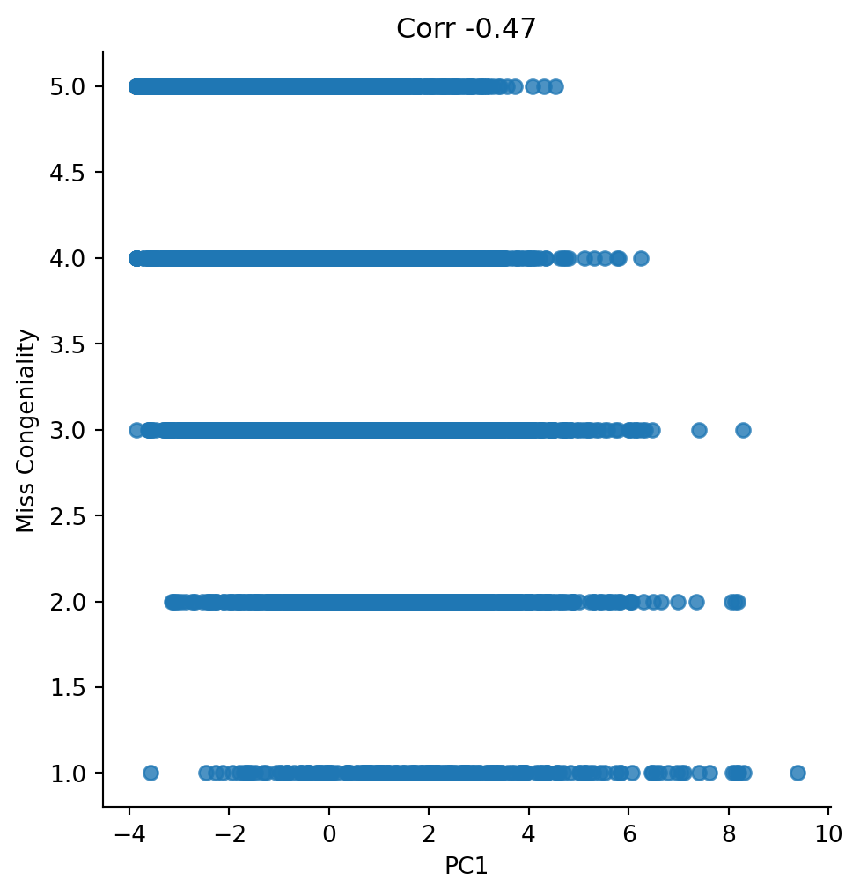
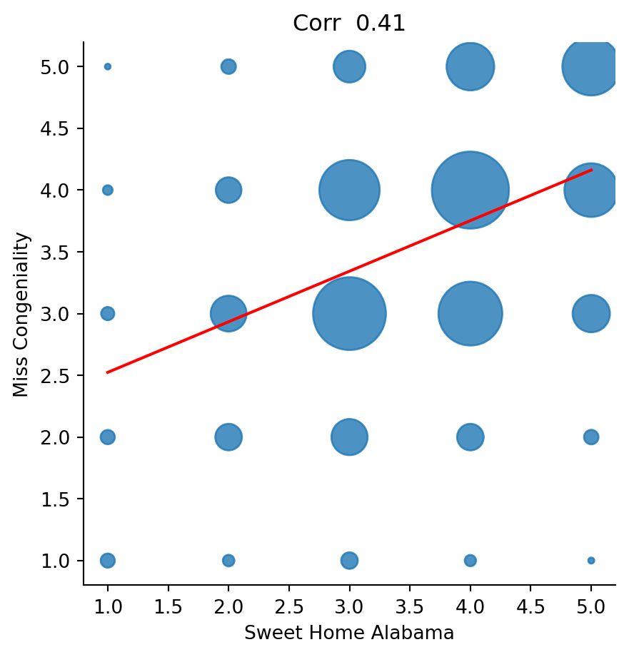
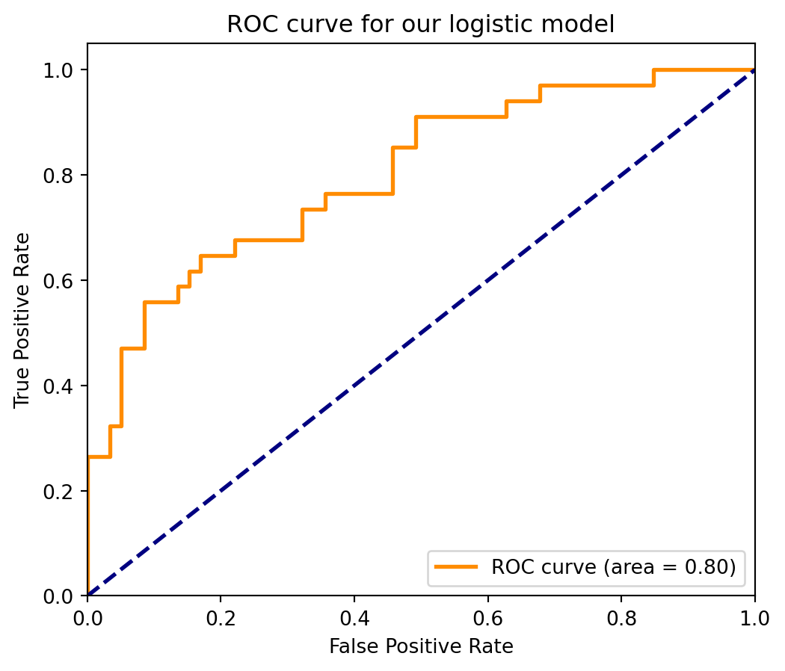

scatter_cong('Sweet Home Alabama')
gsimchoni@gmail.com and add #intro2ds in subjectBasic idea: each observation is made of a vector \(x \in \mathcal{X}\) (for example \(x \in \mathbb{R}^p\)) and a scalar \(y\)
Our goal is to build a model of the relationship between \(x\) and \(y\): \[y \approx f(x)\]
- $x$: predictors, regressors, features, exogenous variables
- $y$: response, dependent variable, endogenous variableTwo distinct goals for this:
Prediction: in the future we will get \(x\) and have to predict \(\hat{y} = f(x)\)
Inference/understanding/model selection: Understanding the nature of the dependence between \(x\) and \(y\):
Regression: \(y \in \mathbb{R}\) numeric
Classification: \(y \in \mathcal{G}\) an unordered set
\(x \in \mathbb{R}^{K \times K \times 3}\): the image itself
\(y \in \{\text{impressionist}, \text{realist}\}\)
More involved example: Cifar-10 with 10 classes
A good model: \(f(x)\) such that \(f(x) \approx 1\) for impressionist and \(f(x)\approx 0\) for realist
Possible \(f\): threshold the average red value for all pixels
Does not do a very good job in separating impressionist from realist paintings…
Recall we had \(x \in \mathbb{R}^{99}\) movies, plus one special (Miss Congeniality) that we will call \(y\)
A good model \(f(x)\) sees the scores a user gave to the 99 movies (including which are missing) and gives a value that is close to \(y\) for the same user
The same score as a similar movie, say Sweet Home Alabama:
The first PC score (those who love everything, love Miss Congeniality?):
from sklearn.decomposition import PCA
X = ratings.values[:,:14]
X_centered = X - X.mean(axis = 0)
pca = PCA()
pca.fit(X_centered)
W = pca.components_.T
T = X_centered @ W
add_data_1=pd.DataFrame({'PC1': T[:,0], 'Miss Congeniality':miss_cong.values[:,0]})
sns.lmplot(x='PC1', y='Miss Congeniality', data=add_data_1, legend = False, fit_reg=False, ci=None)
plt.title(f'Corr {np.corrcoef(T[:,0],miss_cong.values[:,0])[0,1] :.2f}')
plt.show()
We typically assume that we have a training dataset of size \(n\): \(Tr = \{(x_1,y_1),\dots,(x_n,y_n)\} = (X_{n\times p},Y_{n\times 1})\)
IID assumption: each pair \((x_i, y_i)\) is drawn indepednently from some distribution \(P_{x,y}\)
It measures the quality of the prediction: we can think of \(L(y,\hat{y})\) as a measure of how much we lose when we predict \(\hat{y}\) but the truth is \(y\).
Simple example for classification: misclassification error loss \[L(y,\hat{y}) = \left\{\begin{array}{ll} 0 & \mbox{if } y=\hat{y}\\ 1 & \mbox{if } y\neq\hat{y}\end{array} \right.\]
More complex approach: penalize different types of error differently, e.g.: \[L(y,\hat{y}) = \left\{\begin{array}{ll} 0 & \mbox{if } y=\hat{y}\\ 1 & \mbox{if } y=0,\hat{y}=1\\ 10 & \mbox{if } y=1,\hat{y}=0 \end{array} \right.\]
Simple example for regression: squared error loss \[L(y,\hat{y}) = (y-\hat{y})^2.\]
We are interested in \(\mathbb{E}_{x_0,y_0}(L(y_0, \hat{y}_0))\), but we don’t know it
Solution: in addition to the training data \(Tr\), have a test data \(Te= \{(x_{n+1},y_{n+1}),...,(x_{n+m},y_{n+m})\}\) of size \(m\) and evaluate the model on it: \(\;\;\hat{Err} = \frac{1}{m} \sum_{i=n+1}^{n+m} L(y_i, \hat{f}(x_i)).\)
For squared error loss, it is typical to report the Root mean squared error: \[RMSE = \sqrt{\frac{1}{m} \sum_{i=n+1}^{n+m} (y_i-\hat{f}(x_i))^2}\]
Since we typically only have one dataset (as in Netflix, wikiart examples), we split it randomly in two parts:
Let’s divide our Netflix data 80-20:
X = ratings.values
Y = miss_cong.values[:, 0]
n = X.shape[0]
tr_size = int(0.8 * n)
te_size = n - tr_size
tr_ind = np.random.choice(range(n), tr_size, replace=False)
Xtr = X[tr_ind,]
Xte = np.delete(X, tr_ind, axis=0)
Ytr = Y[tr_ind]
Yte = np.delete(Y, tr_ind)
print(f'No. of train rows: {Xtr.shape[0]}, no. train of cols: {Xtr.shape[1]}')
print(f'No. of test rows: {Xte.shape[0]}, no. test of cols: {Xte.shape[1]}')
print(f'no. of obs in train y: {Ytr.shape[0]}')
print(f'no. of obs in test y: {Yte.shape[0]}')No. of train rows: 8000, no. train of cols: 99
No. of test rows: 2000, no. test of cols: 99
no. of obs in train y: 8000
no. of obs in test y: 2000Assume now \(x \in \mathbb{R}^p, y\in \mathbb{R}\), and we want to build a model of the form: \[\hat{f}(x) = \hat{\beta}_0 + \hat{\beta}_1 x_1 + \ldots + \hat{\beta}_p x_p.\]
We have \(Tr\), how can we estimate the coefficients?
Find coefficients that ’’fit” \(Tr\) well, that is \(\hat{f}(x_i) \approx y_i,\;i=1,\ldots,n.\)
Possible approach: Minmize residual sum of squares (RSS): \[RSS(\beta_0, \beta_1, \dots, \beta_p) = \sum_{i=1}^n (y_i - (\hat{\beta}_0 + \hat{\beta}_1 x_{i1} + \ldots + \hat{\beta}_p x_{ip}))^2 = \|Y - X_{n \times (p+1)} \beta\|^2.\]
This is the ordinary least squares (OLS) linear regression problem
Let’s go back to \(y\) = Miss Congeniality vs. \(x_1\) = Sweet Home Alabama:
The statsmodels approach:
y = 2.12 + 0.41*x1The model is a simple straight line:

# this is the sklearn approach, no need to add constant
X_sweet_te = Xte[:, [sweet_home_idx]]
y_hat_te = model.predict(X_sweet_te)
test_RMSE_null = np.sqrt(np.mean((Yte-np.mean(Ytr))**2))
test_RMSE_1movie = np.sqrt(np.mean((Yte-y_hat_te)**2))
print(f'Test RMSE predicting the mean: {test_RMSE_null: .2f}')
print(f'Test RMSE with Sweet Home Alabama: {test_RMSE_1movie: .2f}')Test RMSE predicting the mean: 0.97
Test RMSE with Sweet Home Alabama: 0.88 OLS Regression Results
==============================================================================
Dep. Variable: y R-squared: 0.281
Model: OLS Adj. R-squared: 0.280
Method: Least Squares F-statistic: 223.1
Date: Wed, 26 Jul 2023 Prob (F-statistic): 0.00
Time: 19:28:25 Log-Likelihood: -9657.6
No. Observations: 8000 AIC: 1.935e+04
Df Residuals: 7985 BIC: 1.945e+04
Df Model: 14
Covariance Type: nonrobust
============================================================================================
coef std err t P>|t| [0.025 0.975]
--------------------------------------------------------------------------------------------
const 0.3364 0.089 3.768 0.000 0.161 0.511
Independence Day 0.0660 0.013 4.981 0.000 0.040 0.092
The Patriot -0.0190 0.012 -1.629 0.103 -0.042 0.004
The Day After Tomorrow 0.0410 0.011 3.780 0.000 0.020 0.062
Pirates of the Caribbean 0.0664 0.012 5.600 0.000 0.043 0.090
Pretty Woman 0.1588 0.011 13.904 0.000 0.136 0.181
Forrest Gump -0.0681 0.013 -5.093 0.000 -0.094 -0.042
The Green Mile 0.0268 0.013 2.008 0.045 0.001 0.053
Con Air 0.0751 0.012 6.183 0.000 0.051 0.099
Twister 0.0897 0.012 7.671 0.000 0.067 0.113
Sweet Home Alabama 0.2284 0.011 21.140 0.000 0.207 0.250
Pearl Harbor 0.0324 0.010 3.128 0.002 0.012 0.053
Armageddon 0.0103 0.013 0.803 0.422 -0.015 0.035
The Rock -0.0011 0.013 -0.084 0.933 -0.026 0.024
What Women Want 0.1539 0.011 13.567 0.000 0.132 0.176
==============================================================================
Omnibus: 123.561 Durbin-Watson: 2.003
Prob(Omnibus): 0.000 Jarque-Bera (JB): 129.392
Skew: -0.301 Prob(JB): 8.00e-29
Kurtosis: 3.159 Cond. No. 150.
==============================================================================
Notes:
[1] Standard Errors assume that the covariance matrix of the errors is correctly specified.# this is the statsmodels approach, need to add constant
Xte1 = sm.add_constant(Xte[:, :14])
y_hat_te = model.predict(Xte1)
test_RMSE_14movies = np.sqrt(np.mean((Yte - y_hat_te)**2))
print(f'Test RMSE with the mean: {test_RMSE_null: .2f}')
print(f'Test RMSE with Sweet Home Alabama: {test_RMSE_1movie: .2f}')
print(f'Test RMSE with 14 movies: {test_RMSE_14movies: .2f}')Test RMSE with the mean: 0.97
Test RMSE with Sweet Home Alabama: 0.88
Test RMSE with 14 movies: 0.83What is the model now?
What to do about missing? Let’s keep as 0 for now (did not rate = hate…)
Dealing with missing values is an important topic, that we won’t cover here
Xtr[np.isnan(Xtr)] = 0
Xtr1 = sm.add_constant(Xtr)
model = sm.OLS(Ytr, Xtr1)
model = model.fit()
Xte[np.isnan(Xte)]=0
Xte1 = sm.add_constant(Xte)
y_hat_te = model.predict(Xte1)
test_RMSE_99movies = np.sqrt(np.mean((Yte - y_hat_te)**2))
print(f'Test RMSE with the mean: {test_RMSE_null: .2f}')
print(f'Test RMSE with Sweet Home Alabama: {test_RMSE_1movie: .2f}')
print(f'Test RMSE with 14 movies: {test_RMSE_14movies: .2f}')
print(f'Test RMSE with 99 movies: {test_RMSE_99movies: .2f}')Test RMSE with the mean: 0.97
Test RMSE with Sweet Home Alabama: 0.88
Test RMSE with 14 movies: 0.83
Test RMSE with 99 movies: 0.78Let’s start from the simple case \(p=1\): one feature (Sweet Home Alabama) + constant/intercept
Finding the coefficients: \[\min_{\beta_0,\beta_1} \sum_{i=1}^n (y_i - (\beta_0+\beta_1 x_i))^2\]
This is a quardratic function of \(\beta\), find minimizer by differentiating and equating to zero. Normal equations: \[-2X^T (Y-X\beta) = 0\]
This looks scary, but it simply means: \[\frac{\partial RSS(\beta)}{\partial \beta_j}=\sum_{i=1}^n x_{ij} \left(y_i- (\beta_0 + \sum_{k=1}^p x_{ik} \beta_k)\right) = 0,\;\;j=0,\ldots,p\]
The problem: \[-2X^T (Y-X\beta) = 0\]
The solution: \[X^TX\beta = X^T Y \;\;\Rightarrow\;\; \hat{\beta} = (X^TX)^{-1} X^T Y.\] (the second derivative matrix is positive definite \(\Rightarrow\) minimum)
The columns of the matrix \(X_{n\times (p+1)}\) are vectors \(X^c_0, \dots, X^c_p \in \mathbb{R}^n.\)
Each feature in \(Tr\) is such a vector.
The response vector in \(Tr\) is \(Y_{n \times 1}\), which is also a vector in \(\mathbb{R}^n\).
\(X\beta = X^c_0 \beta_0 + \dots +X^c_p \beta_p\) is a linear combination of the columns.
Hence, in \(\min_\beta \| Y-X\beta\|^2\) we are seeking a linear combination of the columns which is closest to \(Y\) in \(\text{Span}(X^c_0, \dots ,X^c_p)\).
\(\Rightarrow\) OLS is an orthogonal projection of \(Y\) on the column space of \(X\)
What we know: \[(a)\; E(Y) = X\beta,\;\;\;\; (b)\; Cov(Y) = \sigma^2 I_n ,\;\;\;\;(c)\; \hat{\beta} = (X^TX)^{-1} X^T Y\]
Mean: \[E(\hat{\beta}) \stackrel{(c)}{=} (X^TX)^{-1} X^T E(Y) \stackrel{(a)}{=} (X^TX)^{-1} X^T X\beta = \beta.\]
Covariance matrix: \[Cov(\hat{\beta}) \stackrel{(c)}{=} (X^TX)^{-1} X^T Cov(Y) X (X^TX)^{-1} \stackrel{(b)}{=} \sigma^2 (X^TX)^{-1} (X^T X) (X^TX)^{-1} = \sigma^2 (X^TX)^{-1}.\]
From the previous formulas we conclude: \(\hat{\beta}_j \sim N(\beta_j, \sigma^2 (X^TX)^{-1}_{j,j}).\)
Recall that our second goal (beyond prediction) was inference: which variables are important?
Now we can formalize this as a hypothesis test: for each variable \(j\), test the null \(H_{0j}: \beta_j = 0.\)
If \(H_{0j}\) holds, then \(\hat{\beta}_j \sim N(0, \sigma^2 (X^TX)^{-1}_{j,j}).\)
Assuming \(\sigma^2\) is known, this leads to a simple \(Z\)-test as we studied
Since \(\sigma^2\) is not known, we need to estimate it and get a T-test instead (details omitted).
OLS Regression Results
==============================================================================
Dep. Variable: y R-squared: 0.281
Model: OLS Adj. R-squared: 0.280
Method: Least Squares F-statistic: 223.1
Date: Wed, 26 Jul 2023 Prob (F-statistic): 0.00
Time: 19:28:25 Log-Likelihood: -9657.6
No. Observations: 8000 AIC: 1.935e+04
Df Residuals: 7985 BIC: 1.945e+04
Df Model: 14
Covariance Type: nonrobust
============================================================================================
coef std err t P>|t| [0.025 0.975]
--------------------------------------------------------------------------------------------
const 0.3364 0.089 3.768 0.000 0.161 0.511
Independence Day 0.0660 0.013 4.981 0.000 0.040 0.092
The Patriot -0.0190 0.012 -1.629 0.103 -0.042 0.004
The Day After Tomorrow 0.0410 0.011 3.780 0.000 0.020 0.062
Pirates of the Caribbean 0.0664 0.012 5.600 0.000 0.043 0.090
Pretty Woman 0.1588 0.011 13.904 0.000 0.136 0.181
Forrest Gump -0.0681 0.013 -5.093 0.000 -0.094 -0.042
The Green Mile 0.0268 0.013 2.008 0.045 0.001 0.053
Con Air 0.0751 0.012 6.183 0.000 0.051 0.099
Twister 0.0897 0.012 7.671 0.000 0.067 0.113
Sweet Home Alabama 0.2284 0.011 21.140 0.000 0.207 0.250
Pearl Harbor 0.0324 0.010 3.128 0.002 0.012 0.053
Armageddon 0.0103 0.013 0.803 0.422 -0.015 0.035
The Rock -0.0011 0.013 -0.084 0.933 -0.026 0.024
What Women Want 0.1539 0.011 13.567 0.000 0.132 0.176
==============================================================================
Omnibus: 123.561 Durbin-Watson: 2.003
Prob(Omnibus): 0.000 Jarque-Bera (JB): 129.392
Skew: -0.301 Prob(JB): 8.00e-29
Kurtosis: 3.159 Cond. No. 150.
==============================================================================
Notes:
[1] Standard Errors assume that the covariance matrix of the errors is correctly specified.Minimize RSS on \(Tr\) to find the “best” linear fit for \(Y\) as a function of \(X\)
Algebraic solution, geometric interpretation: projection
Under the assumed statistical model (strong assumptions!) can do inference on which variables are important
The most important tool in the statistical/predictive modeling toolbox!
Learn more: Statistical Models course in Statistics
As we just saw, under the statistical model, \(E\hat{\beta} = \beta \;\Rightarrow\; E(\hat{y}|x) = x^T E (\hat{\beta}) = x^T \beta = E(y|x).\)
Even when the model doesn’t hold, the use of RSS / squared error loss implies estimation of conditional expectation (details omitted)
Hence an interpretation of the OLS prediction is an attempt to estimate the conditional expectation \(E(y|x)\)
This conditional expectation is clearly interesting: it summarizes what we learned about \(y\) from seeing \(x\)
The attempt may not be successful, if the model is not so good (more on that later), but at least we know what we are trying to predict!
Recall the assumed model: \[y = \beta_0 + \beta_1 x_1 + \ldots + \beta_p x_p + \epsilon,\;\;\epsilon \sim N(0,\sigma^2)\]
An alternative criterion to maximize in order to get \(\hat{\beta}\): the Likelihood of the data \[L(\beta|X, y) = \prod_{i = 1}^n{f(y_i|X;\beta)}\]
The \(f\) being the Normal distribution density
This can be shown to give the exact same solution to \(\hat{\beta}\)!
We will focus on the simplest (and most important) case of two-class classification:
As before, we have \(Tr = (X,Y)\) of size \(n\), \(Te\) of size \(m\).
For now, keep assuming \(x \in \mathbb{R}^p\) is numeric as in the wikiart paintings example
Problem: as a probability, \(0\leq P(y=\text{impressionist}|\;\text{image}) \leq 1.\) But model predictions \(x^T\hat{\beta}\) can fall outside the legal range!
Another problem: can we make the model assumptions of normal \(\epsilon\)? No — because \(y\) can only be \(0\) or \(1\)
Deals with the two problems above
We start from assuming a model: \[\log\frac{P(y=1|x)}{P(y=0|x)} = x^T\beta\]
Notice that now all values are legal: \[ 0\leq P(y=1|x) \leq 1 \;\; \Leftrightarrow\;\; -\infty \leq \log\frac{P(y=1|x)}{P(y=0|x)} \leq \infty.\]
Given training data \(Tr\), we want to find the best coefficients \(\hat{\beta}\)
This is done by maximum likelihood, finding \(\beta\) to maximize: \[L(\beta|X, y) = \prod_{i = 1}^n{P(y_i|x_i;\beta)} = \prod_{i = 1}^n{P(y_i = 1|x_i;\beta)^{y_i}P(y_i = 0|x_i;\beta)^{1-y_i}}\]
\[\max_\beta \prod_{i=1}^n \left(\frac{\exp(x_i^T\beta)}{1+\exp(x_i^T\beta)}\right)^{y_i} \left(\frac{1}{1+\exp(x_i^T\beta)}\right)^{1-y_i}\]
The solution is \(\hat{\beta}\), the logistic regression coefficients estimates
Predicting on \(x \in Te\): \[\widehat{P(y=1|x)} = \frac{\exp(x^T\hat{\beta})}{1+\exp(x^T\hat{\beta})}\;\; \Rightarrow\;\; \hat{y} = \begin{cases} 1 & \mbox{if} \widehat{P(y=1|x)}> 0.5 \\ 0 & \mbox{otherwise}\end{cases}\]
We can write our model as: \[\log\frac{P(y=1|x)}{P(y=0|x)} = x^T\beta\]
The expression on the left is called the log odds: log of the ratio of positive vs negative probability
Interpretation: \({\beta}_j\) is the change in the log odds from a change of 1 unit in \(x_j\).
For example, if \({\beta}_j=1\) then when \(x_j=1\) vs \(x_j=0\) the log odds increase by \(1\), so the odds increase times \(e=2.72\), which is roughly the increase in \({P(y=1|x)}\) when it is close to \(0\).
When estimating from \(Tr\): add hats over all quantities and remember these are only estimates!
saheart = pd.read_table("../datasets/SAheart.data", header = 0, sep=',', index_col=0)
print(saheart.describe()) sbp tobacco ldl adiposity typea obesity \
count 462.000000 462.000000 462.000000 462.000000 462.000000 462.000000
mean 138.326840 3.635649 4.740325 25.406732 53.103896 26.044113
std 20.496317 4.593024 2.070909 7.780699 9.817534 4.213680
min 101.000000 0.000000 0.980000 6.740000 13.000000 14.700000
25% 124.000000 0.052500 3.282500 19.775000 47.000000 22.985000
50% 134.000000 2.000000 4.340000 26.115000 53.000000 25.805000
75% 148.000000 5.500000 5.790000 31.227500 60.000000 28.497500
max 218.000000 31.200000 15.330000 42.490000 78.000000 46.580000
alcohol age chd
count 462.000000 462.000000 462.000000
mean 17.044394 42.816017 0.346320
std 24.481059 14.608956 0.476313
min 0.000000 15.000000 0.000000
25% 0.510000 31.000000 0.000000
50% 7.510000 45.000000 0.000000
75% 23.892500 55.000000 1.000000
max 147.190000 64.000000 1.000000 SKlearnsaheart_X=pd.get_dummies(saheart.iloc[:, :9]).iloc[:, :9]
saheart_y=saheart.iloc[:, 9]
from sklearn.model_selection import train_test_split
Xtr, Xte, Ytr, Yte = train_test_split(saheart_X, saheart_y, test_size=0.2, random_state=42)
print(f'No. of train rows: {Xtr.shape[0]}, no. train of cols: {Xtr.shape[1]}')
print(f'No. of test rows: {Xte.shape[0]}, no. test of cols: {Xte.shape[1]}')
print(f'no. of obs in train y: {Ytr.shape[0]}')
print(f'no. of obs in test y: {Yte.shape[0]}')No. of train rows: 369, no. train of cols: 9
No. of test rows: 93, no. test of cols: 9
no. of obs in train y: 369
no. of obs in test y: 93statsomdelsimport statsmodels.api as sm
model = sm.Logit(Ytr, sm.add_constant(Xtr))
model = model.fit()
print(model.summary())Optimization terminated successfully.
Current function value: 0.513971
Iterations 6
Logit Regression Results
==============================================================================
Dep. Variable: chd No. Observations: 369
Model: Logit Df Residuals: 359
Method: MLE Df Model: 9
Date: Wed, 26 Jul 2023 Pseudo R-squ.: 0.1994
Time: 19:28:25 Log-Likelihood: -189.66
converged: True LL-Null: -236.90
Covariance Type: nonrobust LLR p-value: 2.041e-16
==================================================================================
coef std err z P>|z| [0.025 0.975]
----------------------------------------------------------------------------------
const -5.3373 1.478 -3.612 0.000 -8.234 -2.441
sbp 0.0081 0.006 1.262 0.207 -0.004 0.021
tobacco 0.0563 0.029 1.926 0.054 -0.001 0.114
ldl 0.1676 0.064 2.599 0.009 0.041 0.294
adiposity 0.0273 0.033 0.823 0.411 -0.038 0.092
typea 0.0411 0.014 3.005 0.003 0.014 0.068
obesity -0.0820 0.049 -1.661 0.097 -0.179 0.015
alcohol 0.0019 0.006 0.344 0.731 -0.009 0.013
age 0.0473 0.013 3.530 0.000 0.021 0.074
famhist_Absent -0.8135 0.255 -3.191 0.001 -1.313 -0.314
==================================================================================SKlearnfrom sklearn.linear_model import LogisticRegression
model = LogisticRegression(solver='lbfgs',max_iter=10000)
model.fit(Xtr, Ytr)
print('intercept:', model.intercept_)
print('coef:', model.coef_)intercept: [-5.37683503]
coef: [[ 0.0080158 0.0557117 0.16737956 0.0271416 0.0410251 -0.08127558
0.00199583 0.04753859 -0.76405442]]from sklearn.metrics import confusion_matrix
p_hat_te = model.predict_proba(Xte)[:, 1]
y_hat_te = p_hat_te > 0.5
conf = confusion_matrix(Yte, y_hat_te)
pd.DataFrame(
confusion_matrix(Yte, y_hat_te),
index=['true:no', 'true:yes'],
columns=['pred:no', 'pred:yes']
)| pred:no | pred:yes | |
|---|---|---|
| true:no | 52 | 7 |
| true:yes | 15 | 19 |
Different errors have different costs/value.
Summarize performance in different ways that capture different types of errors:
| Pred | |||
|---|---|---|---|
| Real | Pos | Neg | Total |
| Pos | \(TP\) | \(FN\) | \(P\) |
| Neg | \(FP\) | \(TN\) | \(N\) |
| Total | \(\hat{P}\) | \(\hat{N}\) |
\(P = \sum_{i=n+1}^{n+m} y_i\) number of positive examples, similarly \(N\).
\(\hat{P} = \sum_{i=n+1}^{n+m} \hat{y}_i\) number of positive predictions, similarly \(\hat{N}\).
\(TP = \sum_{i=n+1}^{n+m} y_i \hat{y}_i\) number of true positives, \(FP = \hat{P}-TP\)
\(TN = \sum_{i=n+1}^{n+m} (1-y_i) (1-\hat{y}_i)\) number of true negatives, \(FN = \hat{N}-TN\)
| Pred | |||
|---|---|---|---|
| Real | Pos | Neg | Total |
| Pos | \(TP\) | \(FN\) | \(P\) |
| Neg | \(FP\) | \(TN\) | \(N\) |
| Total | \(\hat{P}\) | \(\hat{N}\) | \(m\) |
Accuracy: \(P(Correct) = \;(TN+TP)/m\)
Prediction error: \(P(Error) = \;(FN+FP)/m\)
Precision+ (positive predictive value): \(P(True + | Pred +) = \;TP/\hat{P}\)
Recall+ (sensitivity, true positive rate): \(P(Pred + | True +) = \;TP/P\)
False positive rate: \(P(Pred + | True -) = \;FP/N\)
Harmonic mean of precision and recall: \(\;F_1 = 2 \times \frac{Precision \times Recall}{Precision + Recall}\)
We can think of several different prediction goals, all potentially important:
These different tasks can reflect in the loss function / model evaluation task:
The idea: to evaluate ranking performance, do not set the threshold \(0.5\) but check what happens at all possible thresholds:
from sklearn.metrics import roc_curve, auc
fpr, tpr, thresholds = roc_curve(Yte, p_hat_te)
auc1 = auc(fpr, tpr)
plt.plot(fpr, tpr, color='darkorange',
lw=2, label='ROC curve (area = %0.2f)' % auc1)
plt.plot([0, 1], [0, 1], color='navy', lw=2, linestyle='--')
plt.xlim([0.0, 1.0])
plt.ylim([0.0, 1.05])
plt.xlabel('False Positive Rate')
plt.ylabel('True Positive Rate')
plt.title('ROC curve for our logistic model')
plt.legend(loc="lower right")
plt.show()
For a random ranking: \(FPR \approx TPR\) at every threshold, so we are around the diagonal \(x=y\): \[AUC\approx 0.5\]
For a perfect ranking model: at high thresholds, \(FPR=0\), at low thresholds \(TPR=1\), hence: \[AUC=1.\]
Very nice interpretation of AUC: Assume the test set has \(m_1\) ones (\(y=1\)) and \(m_0\) zeros, then AUC is the % of correctly ranked pairs with different response: \[AUC = \frac{ \#\left\{(i,j): y_i = 0, y_j=1 \mbox{ and } \hat{p}_i < \hat{p}_j\right\}}{m_1\times m_0}\]